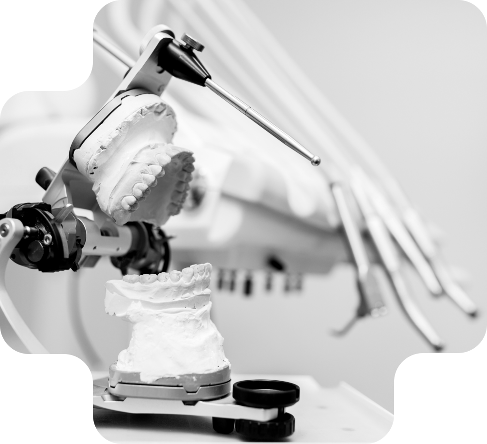
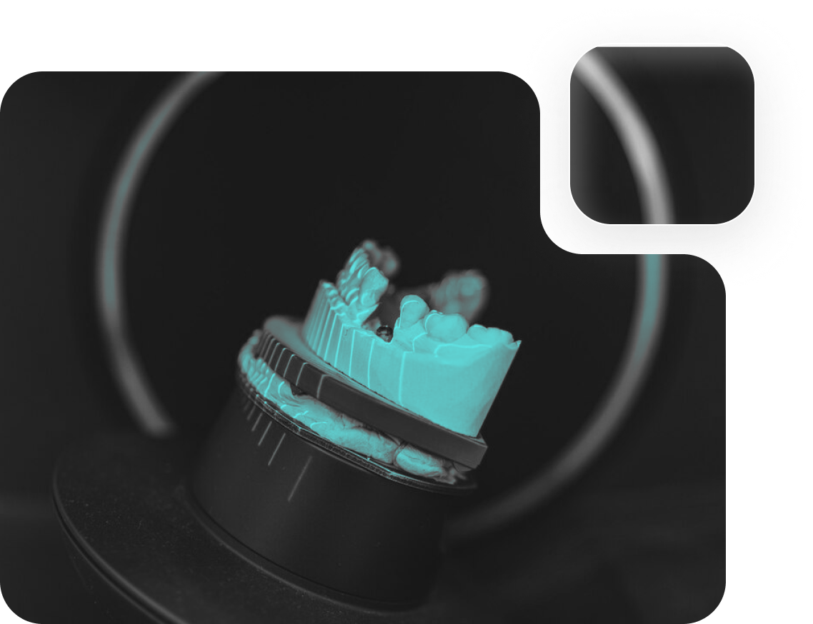

Пломбування зубів та протезування — це можливість змінити форму і розміри, приховати тріщини,
відколи, щілини, жовтий відтінок.
Багато з нас живуть із незручністю через помітні проблеми з зубами, страждають від косметичних та
структурних пошкоджень. Не потрібно це терпіти, час для пломбування зубів!
Реставрація зубів може відновити природну функцію ваших зубів, а також запобігти додатковому
пошкодженню від карієсу, допоможе відновити зовнішній вигляд та безумовно є бути корисним з
естетичної точки зору.
Реставрація зубів — це можливість змінити форму і розміри, приховати тріщини, відколи, щілини,
жовтий відтінок, або видалити певні структури для запобігання карієсу, який може викликати у вас
біль у майбутньому. У багатьох випадках процедура здатна відновити функцію і зовнішній вигляд
зубів одночасно.
Карієс — це процес руйнування твердих тканин зуба внаслідок впливу кислот, що виділяються
мікроорганізмами в результаті їх життєдіяльності. У м’якому зубному нальоті знаходяться залишки
їжі, які є сприятливим середовищем для розвитку бактерій. Якщо його не вичищати, то рано чи пізно
карієс вразить ваші зуби. Так само карієс має властивість розвиватися під старими або неякісними
пломбами.А його ускладнення є найчастішою причиною втрати одного або навіть декілька зубів.
Лікування полягає в тому, що лікар повинен видалити всі інфіковані, розм’якшені тканини, при
цьому максимально зберегти здорову емаль і дентин. З цією метою в нашій клініці використовується
операційний мікроскоп, під збільшенням якого чітко видно кожен шар тканин. Якісне обладнання дає
змогу повністю видалити уражені частини, а результат зробити відчутним та вищими відразу!
Після очищення зуба від каріозних тканин перед лікарем стоїть завдання відновити анатомію, а
відповідно функцію та естетику зуба.

Які переваги реставрації зубів?
Відновлювальна стоматологія приносить вам незліченну кількість переваг. Ось кілька прикладів:
покращує структуру зубів.
покращують зовнішній вигляд вашої посмішки. Заміщення інфікованих, або відсутніх зубів на
зубні імплантати безумовно покращить вашу посмішку.
усуває зубний дискомфорт. У разі карієсу або нещасних випадків, що призводять до тріщин або
відколів зубів, реставрація зубів зменшить ваш дискомфорт.
Якщо виникли проблеми з реставрацією зубів, наприклад, такі як тріщина в пломбі або протези, які не
прилягають належним чином, негайно зверніться до стоматолога. Це потребує швидкого вирішення.
Метод реставрації зуба залежить від с кладності випадку та
підбирається індивідуально
Наприклад, коли пошкодження велике, карієс може досягти коренів зубів, що призведе до великих
ділянок непідтримуваної структури зуба. У цьому випадку ви можете бути хорошим кандидатом для
методу непрямої реставрації зуба. У той час як менші, обмежені ділянки пошкоджень можна з легкістю
виправити за допомогою методу прямого відновлення.
Перший метод: пряма реставрація зуба — це те, що в народі звикли називати пломба.
Вони
використовуються для заповнення порожнини, викликаної карієсом. Являють собою найпоширеніший вид
реставрації зубів.
Виготовляється з фотополімерного композитного матеріалу безпосередньо в порожнині
рота. Така
процедура зазвичай не потребує багато часу, та проводиться в один прийом.
Другий метод: непряма (або лабораторного виготовлення) реставрація. Непряма
реставрація показана, у випадку, коли немає достатньої підтримуючої структури зуба для належного
його відновлення.
Такі реставрації мають назву «накладка». В такому випадку, лікар після очищення зуба від карієсу
знімає відбитки та передає їх в зуботехнічну лабораторію, а на уражений зуб ставить тимчасову
пломбу. Зубний технік, за індивідуальними параметрами виготовляє накладку з чистої кераміки, яка
вставляється пацієнту при наступному прийомі. Вартість такої конструкції індивідуальна, від
5000 до 7000 грн.

Переваги керамічних накладок:
Накладку можна виготовити в тих випадках, коли пломбою зуб немає можливості відновити.
Кераміка міцніше композиту, відповідно термін служби на багато довший, ніж у пломби.
Точніше відновлює анатомію зуба, що дає можливість збільшити якість жування.
Має більш естетичний вигляд ніж пломба.
Імовірність того що під накладкою буде розвиватися карієс значно нижча, ніж під пломбою.
Карієс найчастіше може розвиватись безболісно, в деяких випадках уражений зуб може реагувати на
солодке, кисле, холодне. Зовні все може здаватись добре та без видимих пошкоджень, але всередині зуба
вже розвиватися каріозна порожнина, про яку ви дізнаєтеся лише тоді, коли він через цю порожнини
ослабне і сколеться, або коли бактерії дійдуть до нерва (так званого пульпа зуба). В такому випадку ви
будете відчувати болі різної інтенсивності в залежності від індивідуальних особливостей.
«У випадку, якщо ви вже почали відчувати біль або чутливість під час жування, від гарячої, холодної чи
солодкої їжі та напоїв, зверніться до свого стоматолога.»
Приклад нашої роботи методом прямої реставрації:
Пломбування зубів є ефективним способом вирішення проблем з зубною ємністю та захистом від
карієсу. Це процедура проводиться нашим професійним лікарем-стоматологом і може зберегти Ваші зуби
в здоровому стані на довгий термін.
Якщо виникли проблеми з реставрацією зубів, наприклад, такі як тріщина в пломбі або протези, які не
прилягають належним чином, негайно зверніться до стоматолога. Це потребує швидкого вирішення.